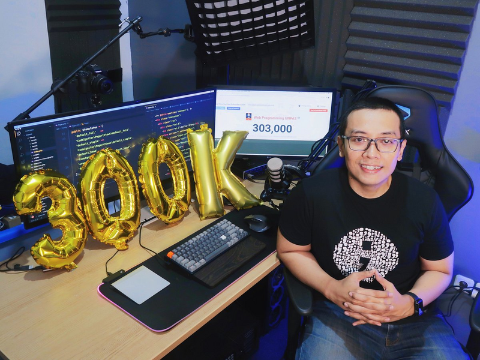
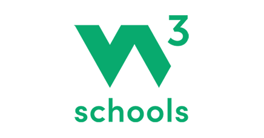
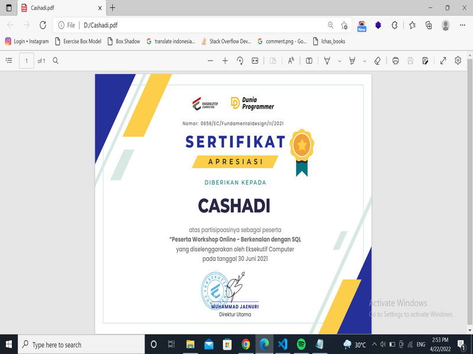
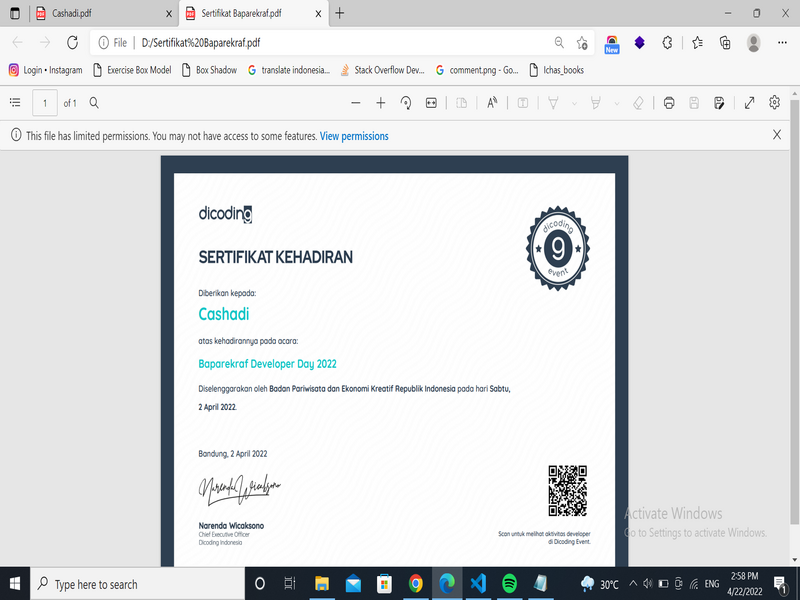
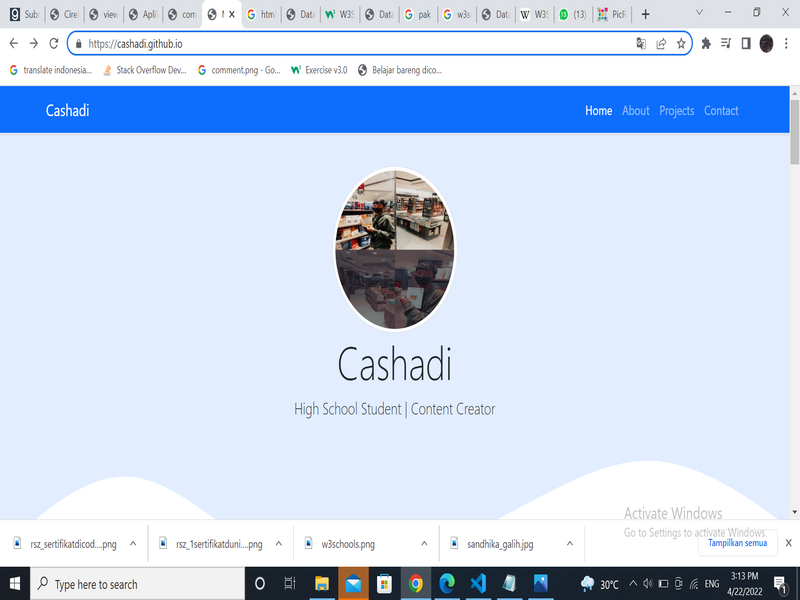

Awal Mula

katanya kalau mau jadi seorang developer/programmer kita harus belajar dasar-dasar pembuatan web terlebih dahulu, saya awal belajar dari Youtube Pak Sandhika Galih mulai dari HTML setiap hari saya terus tonton Youtube nya Pak
Sandhika Galih.
Awal-awal saya menonton playlist tentang Front End Developer dan menonton semua tentang HTML CSS dan Javascript Dasar
Web

W3Schools adalah situs web developer informasi, dengan tutorial dan referensi yang berkaitan dengan topik pengembangan web seperti HTML, CSS, JavaScript, PHP, SQL, dan JQuery.
Habis dari Youtube saya belajar saya belajar dari artikel w3schools disitu semua saya baca, tapi sekarang masih di page CSS
Webinar dan Project
Dan saya juga sering ikut semua webinar yang berbau tentang programmer/developer walaupun tidak blm paham sama sekali. Tapi yang penting kan berusaha mengejar cita-cita saya, dan berikut webinar yang mendapatkan sertifikat :
Dunia Programmer

ini adalah sertifikat pertama saya yang mengikuti webinar colabboration Eksekutif Computer dan Dunia Programmer.
Dicoding

Ini adalah sertifikat dari Dicoding collaboration dengan Baparekraf yaitu acara Baparekraf Developer Day, Saya sangat senang dengan acara ini karna di acara ini saya mengerti tentang Front End Developer, Back End Developer,
dan QA engineer.
Project saya

Ini adalah web saya yang ikut ngobar dengan Pak Sandhika Galih, dan bisa akses disini MyPortfolio